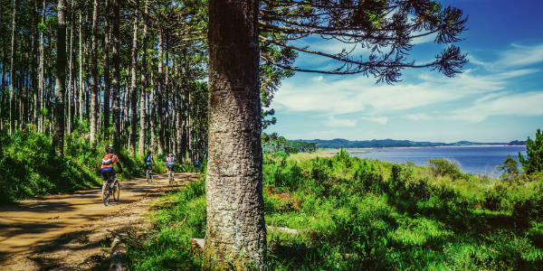
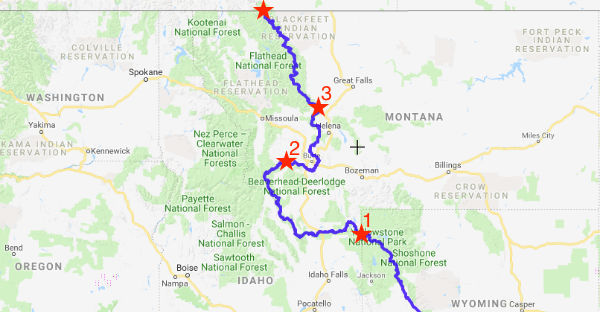

The Great Divide
Come Cycle the Great Continental Divide!
How It Works
We offer 3 different trip lengths along the Great Continental Divide.
- Full Length - Takes 7 days to complete and spans over 750 miles.
- Half Length - Takes 5 days to complete and spans over 375 miles.
- Quarter length - Takes 3 days to complete and spans over 250 miles
Upcoming Dates
Full Tour
June 4 - June 10
June 25 - July 1
July 16 - July 22
Aug 6 - Aug 12
Aug 27 - Sep 2
Half Tour
June 6 - June 10
June 27 - July 1
July 18 - July 22
Aug 8 - Aug 12
Aug 29 - Sep 2
Q. Tour
June 8 - June 10
June 29 - July 1
July 20 - July 22
Aug 10 - Aug 12
Aug 31 - Sep 2

Stunning Views and Vistas
Costs
- Full Length Tour - $999.00/Person
- Half Length Tour - $449.00/Person
- Quarter Length Tour - $299.00/Person
Basic Requirements
- *Must be in good physical condition
- Must have your own bike
- Must have at least 2 spare tire tubes
- Must have a headlamp and a bike mounted light
- Must have 3 changes of batteries for lights

Over 750 Miles
Interactive map!
Routes
Full Ride
Starting at the edge of Yellowstone National Park in Montana we take you all along the Great Continental Divide which borders Idaho on the way up to the Canadian border. This trip starts at the 1st star on the map labeled above and passes through stars 2 and 3 before reaching the final destination at the Canadian border.
Half Ride
Starting 30 miles outside of Butte Montana we take you to meet the tour that is already in progress. Starting at the 2nd star on the map labeled above you will travel all the way up to the Canadian border
Quarter Ride
Starting 25 miles outside of Helena Montana we take you through the Icefields and finish at the Canadian border. You will meet up with the tour that has been traveling for a few days and will finish with them.